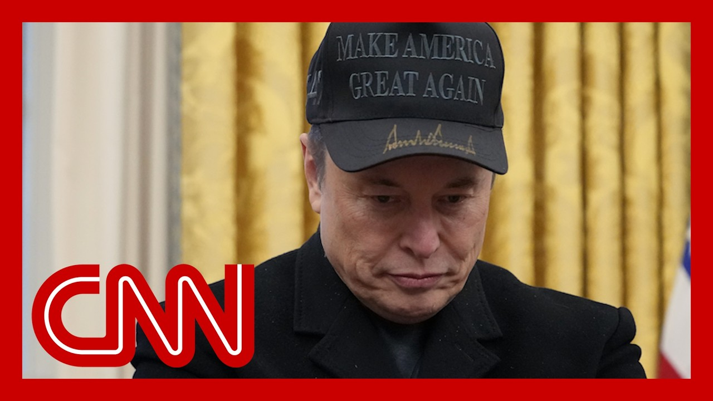

【马斯克称特朗普议程法案“破坏”DOGE使命】
Summary: Elon Musk criticizes President Trump's tax and spending bill, expressing disappointment over its impact on the deficit and DOGE's mission, while distancing himself from political spending.
摘要： 埃隆·马斯克批评特朗普总统的税收和支出法案，对其对赤字和DOGE使命的影响表示失望，同时疏远政治支出。

⏱️ Estimated Reading Time: 15 min
Is there a growing rift between President Trump and his one time first friend, Elon Musk?
特朗普总统和他曾经的第一好友埃隆·马斯克之间是否存在日益扩大的裂痕？
The SpaceX and Tesla CEO expressed his disappointment with the president's sweeping tax and spending bill that passed the House and is currently facing some headwinds in the Senate.
SpaceX和特斯拉首席执行官对总统已通过众议院但目前面临参议院阻力的全面税收和支出法案表示失望。
This is what Musk told CBS news.
这是马斯克告诉CBS新闻的内容。
I was, like, disappointed to see the massive spending bill, frankly, which increases the budget deficit, not just decrease it.
坦率地说，我对看到这项大规模支出法案感到失望，它增加了预算赤字，而不是减少赤字。
And it reminds the work that the DOJ's team is doing.
这让人想起司法部团队正在做的工作。
I think I think a bill can be can be, can be big or it can be beautiful, but I don't know if it can be both.
我认为法案可以很大，也可以很漂亮，但我不确定它能否两者兼得。
My folks all right with us now, a misha cross, a Democratic strategist, and Marc Short, the former chief of staff to Vice President Mike pence.
现在和我们在一起的是米莎·克罗斯，一位民主党策略师，以及前副总统迈克·彭斯的幕僚长马克·肖特。
And Mark, this is the president's entire legislative agenda right now, this tax and spending bill.
马克，这就是总统目前的整个立法议程，这项税收和支出法案。
And Musk has been critical of the president's tariff policy, which is basically his entire economic agenda.
马斯克一直批评总统的关税政策，这基本上是他的整个经济议程。
That's a big part of what President Trump is pushing, that Elon Musk is now very publicly saying, I'm not for sure, John.
这是特朗普总统推动的重要内容，而埃隆·马斯克现在公开表示，我不确定，约翰。
I do think, look, the the sausage making can look like it's it's a the big beautiful bill isn't so beautiful.
我确实认为，你看，法案制定的过程可能看起来并不那么美好。
I think we have to keep in mind that in the House, the margin for Republicans is so small, they think Mike Johnson doesn't get due credit for people who said he wouldn't be able to get the votes to be speaker, he would be able to avoid a shutdown.
我认为我们必须记住，在众议院，共和党的优势非常微弱，他们认为迈克·约翰逊没有得到应有的认可，因为有人说他无法获得足够的选票成为议长，也无法避免政府停摆。
Now he got this tax bill, too.
现在他也推动了这项税收法案。
And when you do that, sometimes you have to give favors different constituencies to get it.
当你这样做时，有时你必须向不同的选区做出让步才能通过法案。
I imagine the center will probably whittle it down some.
我想中间派可能会削减一些内容。
But you know, I there's part of this I'm very excited to see the tax bill moving forward.
但你知道，我对看到税收法案取得进展的部分感到非常兴奋。
I think the president's trade agenda is indefensible.
我认为总统的贸易议程站不住脚。
I just I will say it as a purely political endeavor.
我只是想说这是一项纯粹的政治努力。
What Mike Johnson did was impressive.
迈克·约翰逊所做的令人印象深刻。
Again, objectively, getting that through was an impressive political feat.
再次客观地说，通过这项法案是一项令人印象深刻的政治成就。
But to have Musk criticizing it on its substance, and this is not some minor policy that the president's pushing, this is his entire legislative bull.
但马斯克对其内容提出批评，而这并非总统推动的次要政策，而是他的整个立法议程。
Sure.
当然。
And I could pick apart pieces of it that I don't like either.
我也可以挑出我不喜欢的部分。
John, I think a lot of Republicans could.
约翰，我认为很多共和党人也可以。
I think that some of the expenses of the Salt deductions is, is is grievous.
我认为盐税减免的部分支出是严重的。
But if you're in New York, I know, I know, but at the same time, I think the consequence of a $5 trillion tax increase in the American people is too much for Congress not to get this done.
但如果你在纽约，我知道，我知道，但与此同时，我认为对美国人民增加5万亿美元的税收后果太严重，国会不能不通过这项法案。
Misha, I want to play some sound just to stay on Elon Musk for a second, because Musk, it was a couple weeks ago where he said he was going to get out of the political giving business, and he had a sound bite that's been played.
米莎，我想播放一段关于埃隆·马斯克的录音，因为几周前他说他将退出政治捐款业务，有一段录音被播放过。
But the end of it, I want you to pay attention, to listen.
但最后，我希望你注意听。
In terms of political spending.
在政治支出方面。
I'm going to do a lot less in the future.
我将来会大幅减少。
And why is that?
为什么？
I think I've done enough.
我认为我已经做得够多了。
Well, if I see a reason to do political spending in future, I will do it.
如果将来我看到有理由进行政治支出，我会去做。
I did not see a reason.
我没有看到理由。
It was that last line I do not currently see a reason.
就是最后那句“我目前没有看到理由”。
Now, I don't have any particular insider sources inside Musk world, but I do have my eyes and ears and that sounded like he was saying he doesn't like what he is seeing right now in politics, particularly from the white House, which he's been so supportive of.
现在，我没有马斯克圈子内的内部消息来源，但我有自己的观察和耳朵，听起来他是在说他并不喜欢目前政治中的情况，尤其是来自白宫的，尽管他曾如此支持白宫。
Well, I think there are two things at play here.
我认为这里有两件事在起作用。
As we can all recall, when, when Elon Musk went to Wisconsin a couple months ago, that blew up in his face really badly, the Elon Musk was able to showcase his money.
我们都记得，几个月前埃隆·马斯克去威斯康星州时，事情搞砸了，马斯克能够展示他的财力。
That is his calling card when it comes to, primary and creating challengers for Republicans who don't side with him in the Trump administration.
这是他在初选和为不支持特朗普政府的共和党人制造挑战者时的名片。
he is making sure that people know that he's still there, that he still has a certain level of influence, but he's also trying to, reel in some of the blow that he got, not only from investors at Tesla and some of those who are on the board, but also watching his own approval ratings tank.
他确保人们知道他仍然存在，仍然有一定的影响力，但他也在试图挽回一些打击，这些打击不仅来自特斯拉的投资者和董事会成员，还来自他自己支持率的下降。
And I think that for him, that was a big hit.
我认为对他来说，这是一个重大打击。
He doesn't agree with the big beautiful Bill.
他不同意这项“大而美”的法案。
there are several parts of it that he finds problematic.
他认为其中有几个部分存在问题。
But I also think that the big, beautiful Bill to, to Mark's point, is going to be significantly different by the time that he gets to the Senate.
但我也认为，正如马克所说，这项“大而美”的法案在提交参议院时会大不相同。
for Elon Musk, I think that some of this is personal.
对埃隆·马斯克来说，我认为其中有些是个人原因。
He has seen a strained relationship between him and Trump based on some basic disagreements on policy issues.
由于在政策问题上的基本分歧，他与特朗普的关系变得紧张。
But he's also someone who cares about his bottom line.
但他也是一个关心自己底线的人。
And he doesn't agree with the move that Trump specifically has taken when it comes to these tariffs.
他不同意特朗普在这些关税问题上的具体举措。
We begin this morning with Elon Musk's disappointment as the tech billionaire is stepping away from politics.
我们今天早上从科技亿万富翁埃隆·马斯克的失望开始，他正在退出政治。
He's not shying away from commenting on his work with Doge and President Trump's sweeping tax and spending cuts package, despite spending almost $300 million to help get Trump and GOP congressional candidates elected last year, Musk now makes it clear he's no fan of President Trump's so-called big, beautiful bill.
尽管去年花费了近3亿美元帮助特朗普和共和党国会候选人当选，马斯克现在明确表示他并不支持特朗普所谓的“大而美”法案，并且不回避评论他与DOGE的工作以及特朗普的全面税收和支出削减方案。
not just a decrease.
不仅仅是减少。
It and undermines the work that the Doge team is doing.
它破坏了DOGE团队正在做的工作。
I actually thought that when this big, beautiful bill came along, I mean, like everything he's done on Doge gets wiped out in the first year, I think, I think a bill can be, can My personal opinion.
我实际上认为，当这项“大而美”的法案出台时，他在DOGE上所做的一切在第一年就会被抹去，我认为，我认为法案可以，可以，这是我的个人观点。
Joining us now here in the Situation Room, CNN anchor and chief domestic correspondent show Matt.
现在加入我们的是CNN主播兼首席国内记者马特。
And we feel his comments could put him at very serious odds with the president.
我们认为他的评论可能会让他与总统产生严重分歧。
Yeah, literally does put him at odds with the president.
是的，确实让他与总统产生了分歧。
Obviously the president and the white House pushing very hard to get this cornerstone of their legislative agenda, not just through the House, which they narrowly did last week, but also through the Senate.
显然，总统和白宫正在极力推动他们立法议程的这一基石，不仅要通过众议院（上周勉强通过），还要通过参议院。
And it underscores that it's a very, very delicate moment for what is the central piece of legislation, not just for the president's border and defense policies, but also, of course, for his tax cuts, reauthorization and the cornerstone of his economic plans.
这突显了这是一个非常微妙的时刻，因为这项立法不仅是总统边境和国防政策的核心，当然也是他减税、重新授权和经济计划基石的核心。
I think what this underscores is Musk now out of the white House, at least on a regular basis, is reverting back a little bit to where he was before he entered the white House.
我认为这突显了马斯克现在离开了白宫，至少不再定期参与，正在某种程度上回归到他进入白宫之前的状态。
Remember, Wolf, in the spending bill at the end of the last year, his opposition almost derailed that continuing resolution.
沃尔夫，记得去年年底的支出法案，他的反对几乎破坏了持续决议。
He got crosswise with the administration on immigration issues as well.
他在移民问题上也与政府产生了分歧。
He mostly kept his personal opinions to himself on bigger policy issues for the last 3 or 4 months.
在过去的3到4个月里，他在更大的政策问题上大多保持沉默。
Now that he's out, sort of stepping away a little bit, seems that he's weighing back in.
现在他离开了，某种程度上退了一步，似乎又在重新介入。
That's problematic for two reasons.
这有两个问题。
One, he still has a significant amount of influence, obviously spent nearly $300 million to help elect President Trump at 2024, has spent a lot of money on other Republican candidates as well.
第一，他仍然有相当大的影响力，显然花费了近3亿美元帮助特朗普在2024年当选，还为其他共和党候选人花费了大量资金。
But more importantly, it's the issues that he was pointing out, which is the issue of the deficit, which, Wolf, as you know better than anybody in the Senate, is particularly problematic, where senators like Ron Johnson and Rand Paul are saying the House bill, even though they got it across the finish line, simply does not cut enough given where deficits and debts are right now.
但更重要的是，他指出的问题是赤字问题，沃尔夫，正如你比参议院任何人都清楚，赤字问题尤其棘手，像罗恩·约翰逊和兰德·保罗这样的参议员表示，众议院的法案虽然通过了，但鉴于目前的赤字和债务水平，削减力度远远不够。
Yeah.
是的。
We'll see what happens in the Senate that will that will be critical indeed.
我们将看到参议院会发生什么，这确实至关重要。
What else did Elon Musk say about Doge and its mission?
埃隆·马斯克还说了什么关于DOGE及其使命的内容？
What's fascinating about this is Musk, I think was in a very reflective moment.
有趣的是，我认为马斯克正处于一个非常反思的时刻。
He's done a number of interviews over the course of the last 24 hours as kind of returns full time to Tesla, to SpaceX, saying basically he's back to the sleep in the, in the manufacturing plant, work 24 over seven on his company, something investors very much like.
在过去24小时内，他进行了多次采访，因为他全职回归特斯拉和SpaceX，基本上说他回到了制造工厂睡觉，每周7天24小时为公司工作，这是投资者非常喜欢的。
If you look over the course of the last couple days, Tesla stock has shot up.
如果你看看过去几天，特斯拉股价飙升。
But he also underscored the difficulty that Doge faced in its opening months.
但他也强调了DOGE在最初几个月面临的困难。
We all saw that kind of move fast and break stuff.
我们都看到了那种“快速行动、打破常规”的做法。
Theory of the case that they brought in to the government, but most saying that Doge was basically becoming a whipping boy for everything, at one point saying they were getting blamed for things that they weren't actually involved in.
他们引入政府的理论，但大多数人表示DOGE基本上成了替罪羊，一度说他们因为一些实际上没有参与的事情而受到指责。
One thing I would note, the wolf, and this is important for people to understand.
沃尔夫，我想指出一件事，这对人们理解很重要。
There's this kind of broad perception that because Musk is leaving Doge, his mission is over.
有一种普遍的认知认为，因为马斯克离开了DOGE，他的使命就结束了。
What Doge is actually working on in the government is no longer happening.
DOGE在政府中实际在做的事情不再继续。
That's not the case.
事实并非如此。
We've reported about how really they've been they've been integrated.
我们报道过他们实际上已经被整合。
Doge officials have been integrated throughout the federal government and have risen higher and higher in terms of their political positions that they hold.
DOGE官员已经融入整个联邦政府，并且在他们担任的政治职位上越来越高。
They're still very much in effect.
他们仍然非常有效。
And Musk makes that point in some of these interviews, including with The Washington Post, saying that they're maybe going to have smaller ambitions, but they're still very much in place and they're still very focused on a mission.
马斯克在其中一些采访中提到了这一点，包括《华盛顿邮报》，表示他们可能会有更小的野心，但他们仍然存在，并且仍然非常专注于一项使命。
All right.
好的。
Phil Mattingly, thank you very, very much.
菲尔·马廷利，非常感谢。